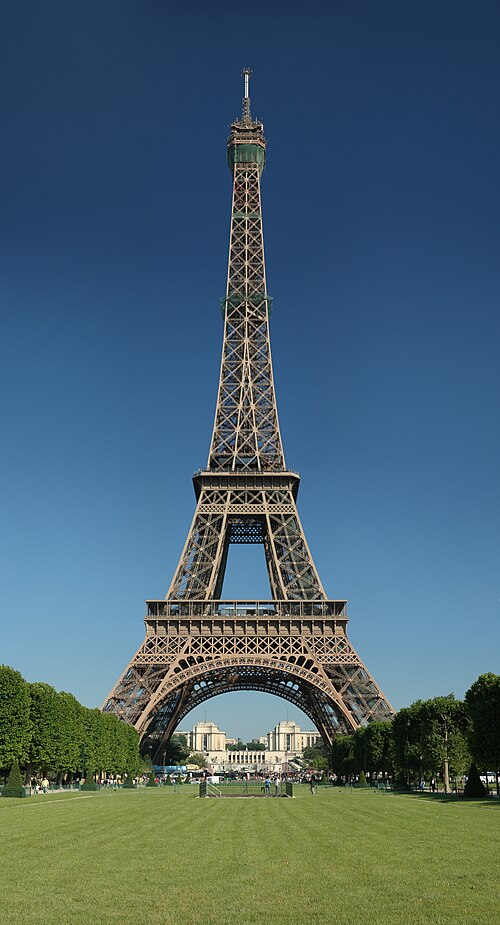
 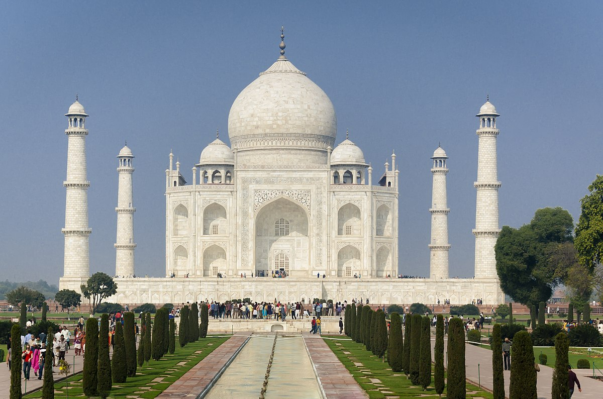
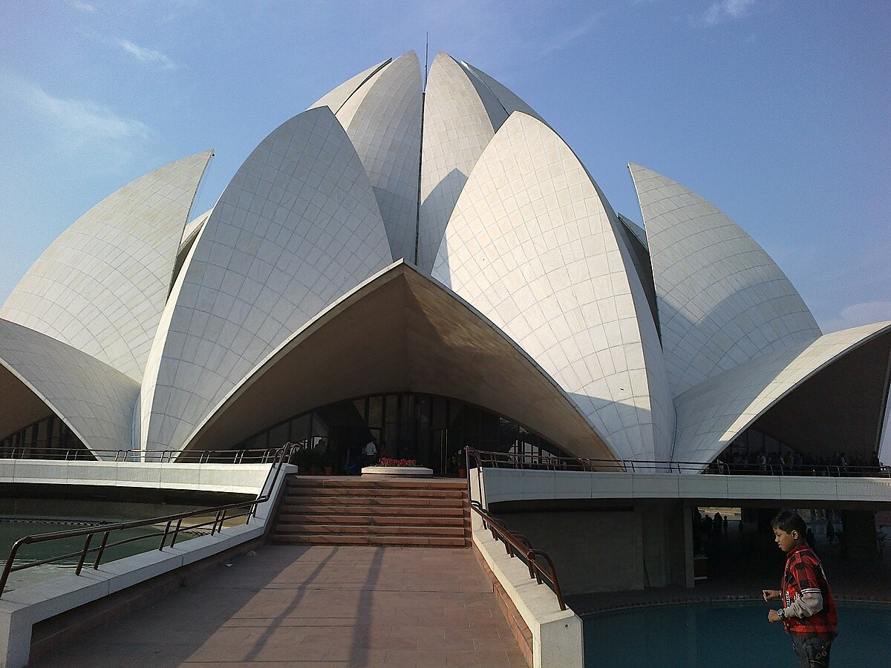
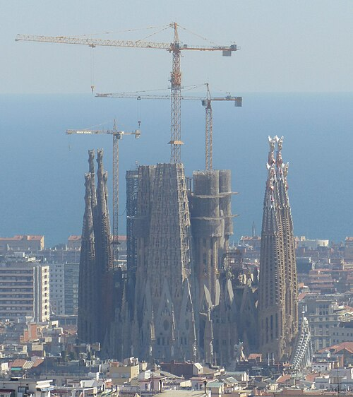
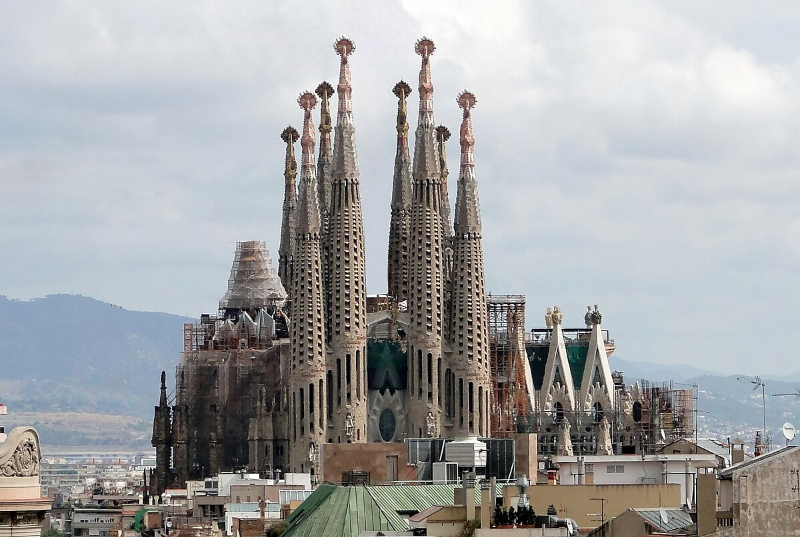
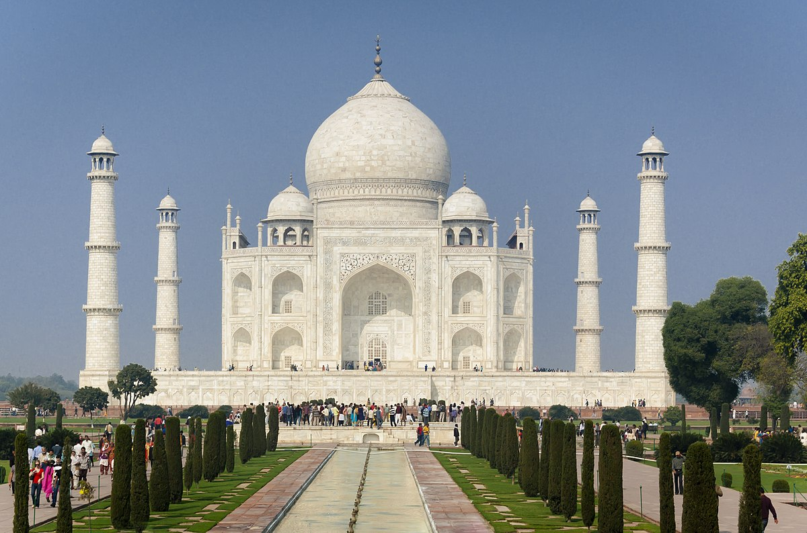
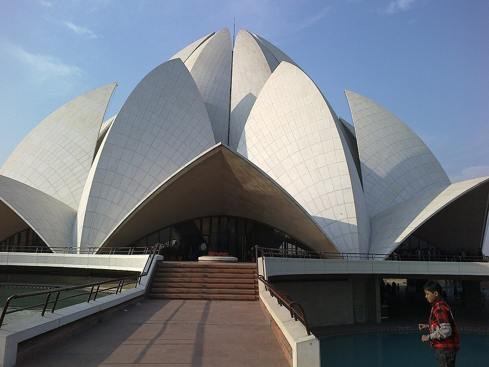
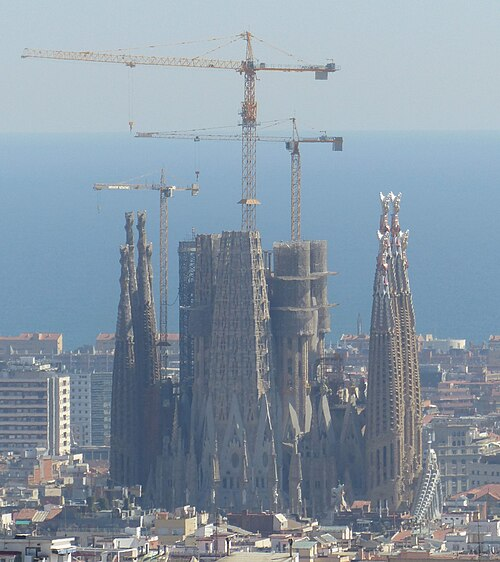
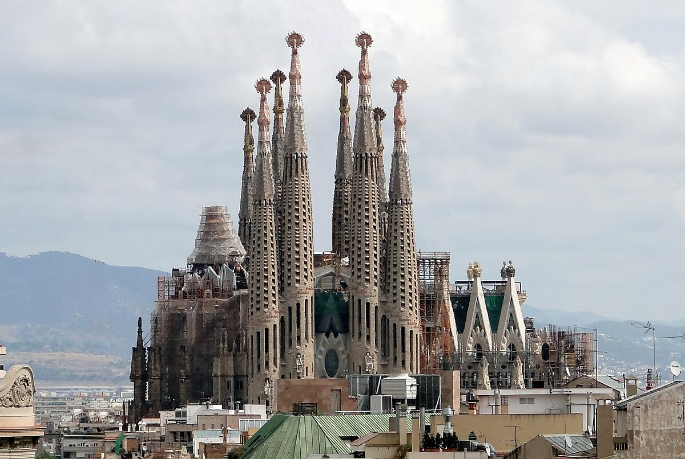
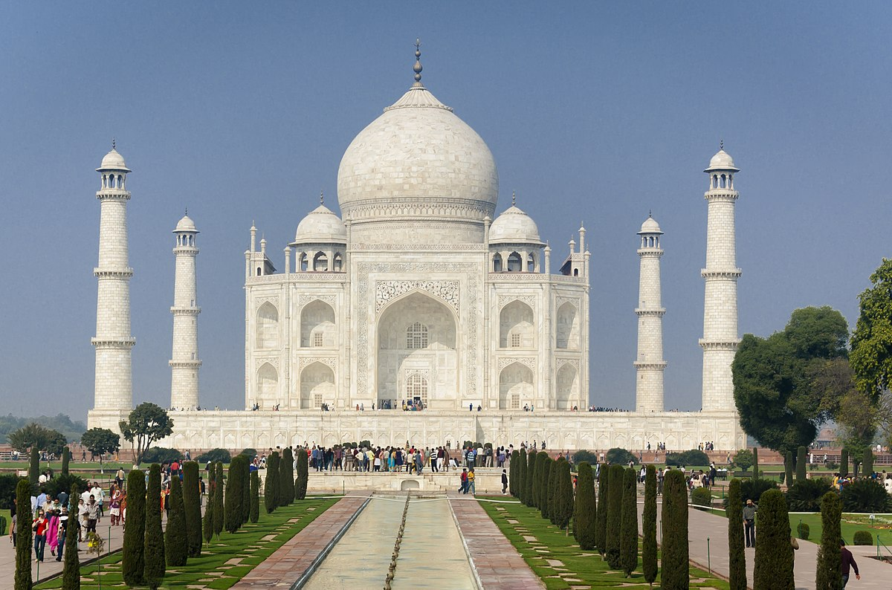
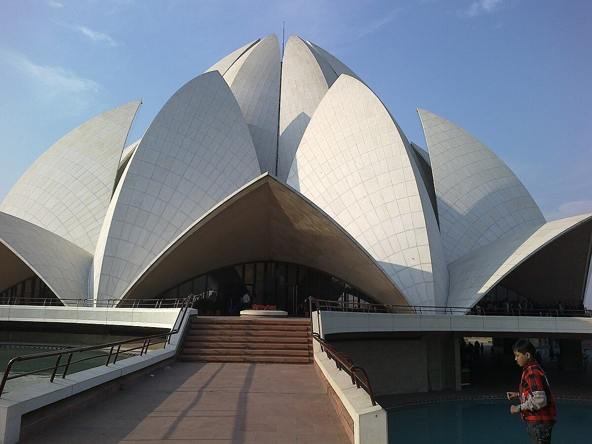
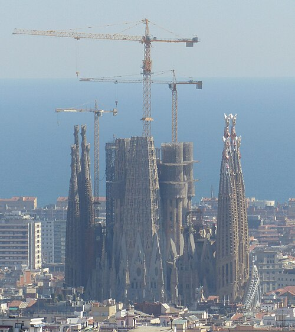
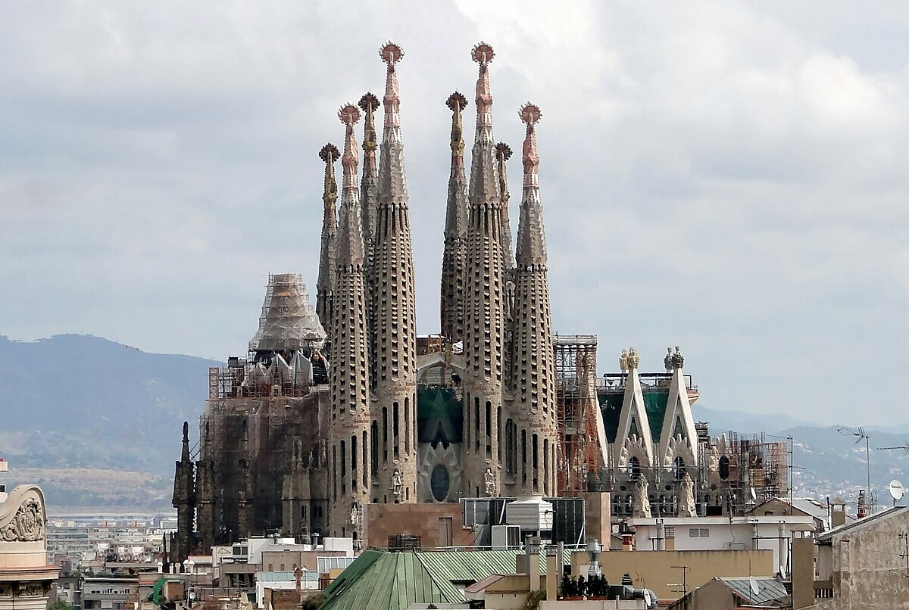
Welcome to the World of Architecture
Explore timeless designs and iconic structures through an interactive experience.
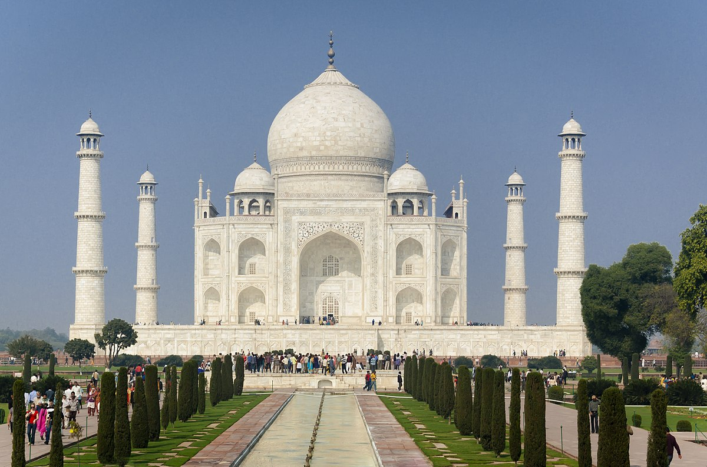
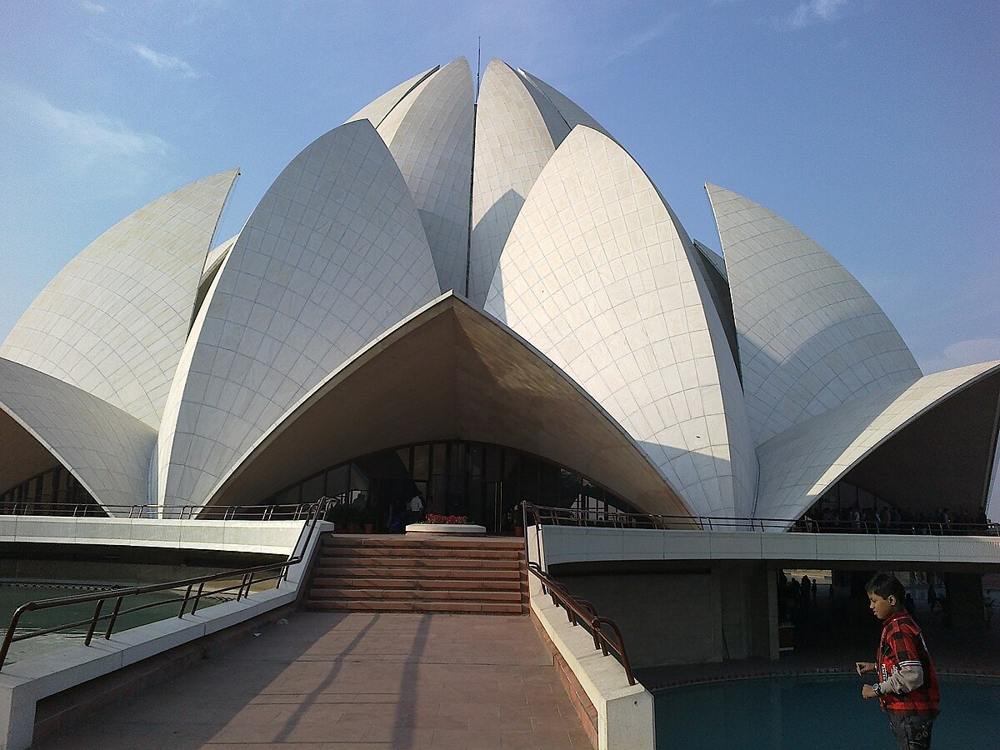
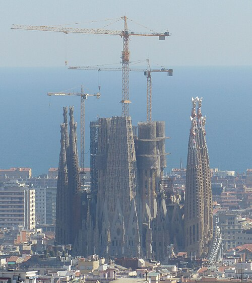
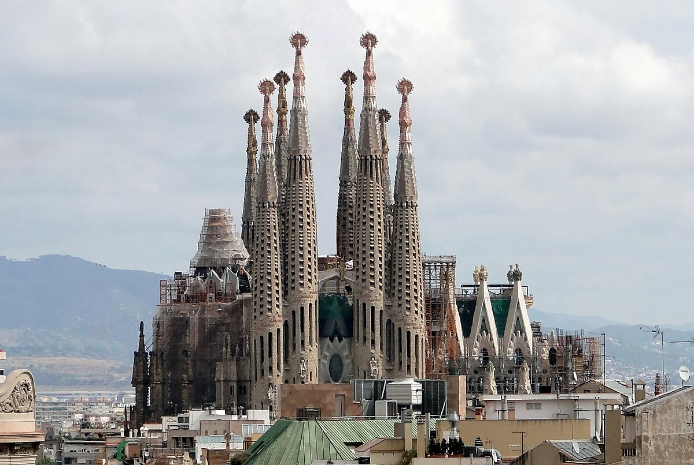
Explore timeless designs and iconic structures through an interactive experience.
Architecture is the art and science of designing and constructing buildings and spaces. Over centuries, architecture has evolved to reflect the culture, technology, and creativity of societies, shaping the world around us. From ancient wonders to modern skyscrapers, architecture tells the story of humanity.
The history of architecture spans from prehistoric times to the present day. Ancient civilizations like Egypt and Mesopotamia built massive temples and pyramids. The Greeks and Romans contributed classical styles that emphasized symmetry and proportion, while the Gothic period introduced innovations like pointed arches and flying buttresses. Read more
Architecture is defined by diverse styles, from the ornate Baroque to minimalist Modernism. Each style reflects the cultural and technological advancements of its era. Styles like Gothic, Renaissance, and Modernism continue to influence contemporary designs. Read more
Architects are the creative minds behind iconic structures. Figures like Frank Lloyd Wright, Zaha Hadid, and Le Corbusier revolutionized design principles and left a lasting legacy. Their works showcase a blend of innovation, functionality, and artistry. Read more
Discover stunning architectural marvels from around the globe. From the Taj Mahal to the Eiffel Tower, our gallery showcases the diversity and beauty of architectural designs. View gallery